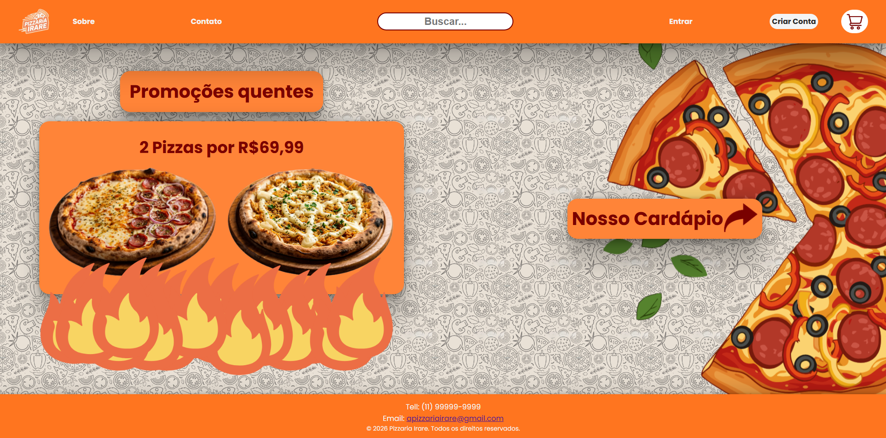
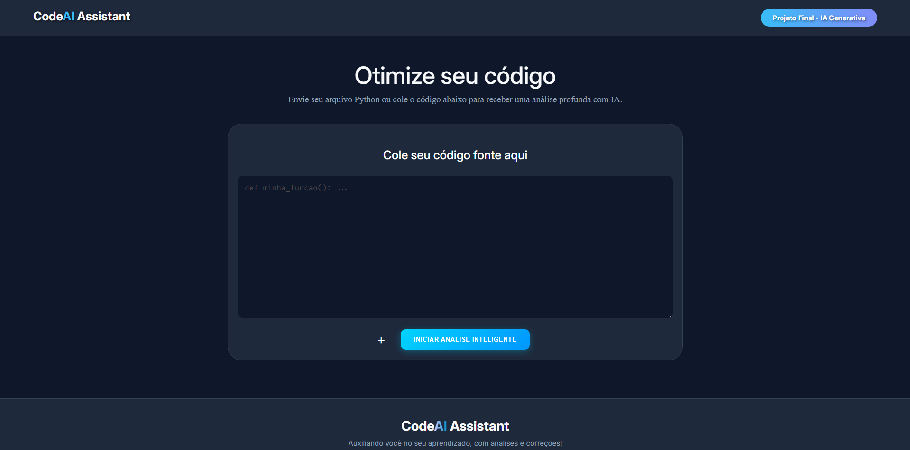
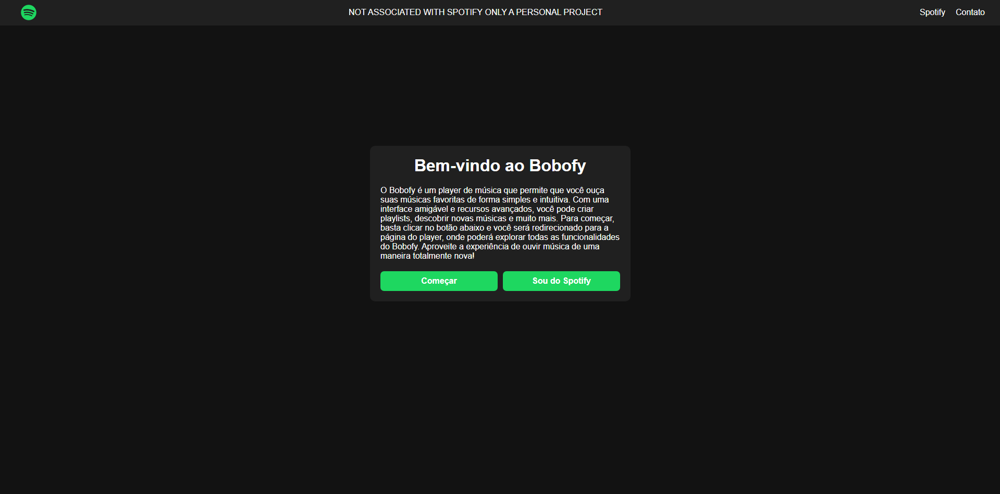

Meus Projetos
Pizzeria Irare

A Pizzaria Irare é um protótipo de site para pedidos online, desenvolvido como projeto pessoal de aprendizado em desenvolvimento web front-end.
Acessar projetoCodeAI-Assistant

Sistema inteligente de análise de código desenvolvido com Python, Flask e Inteligência Artificial Generativa.
Acessar projetoBobofy

O Bobify é uma aplicação web em Flask para explorar e interagir com a API do Spotify de forma simples e prática.
Acessar projeto